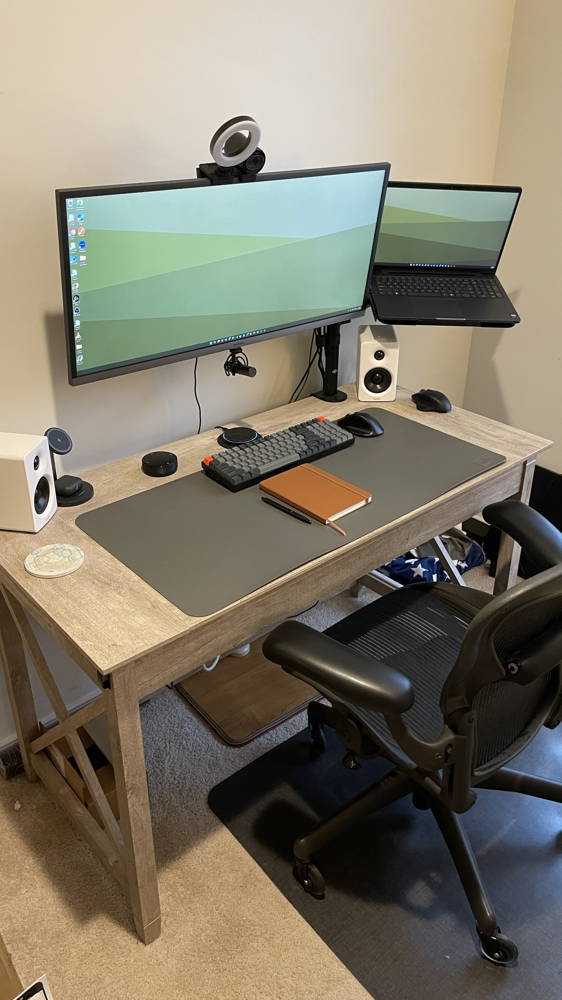
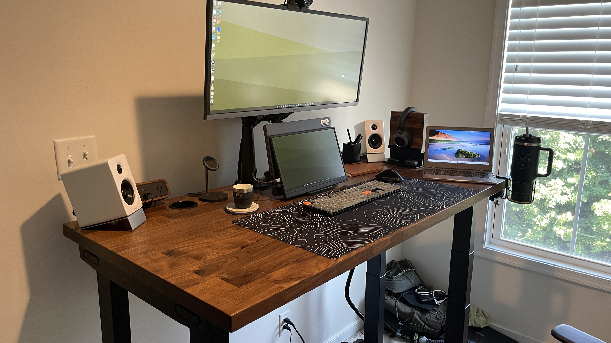
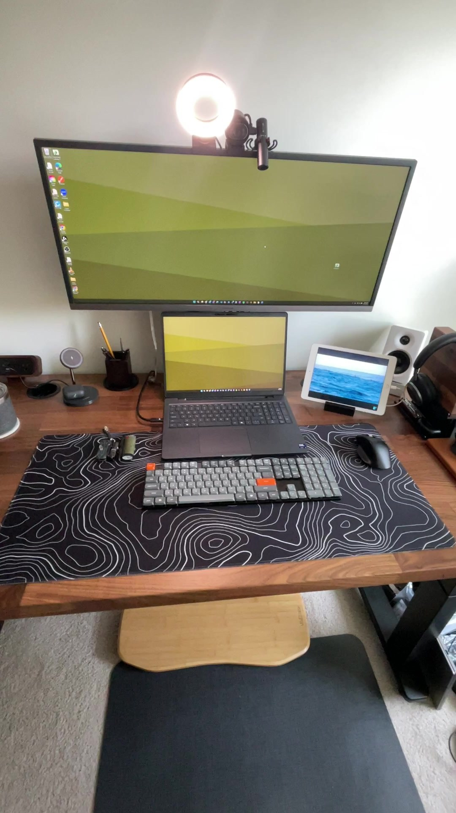
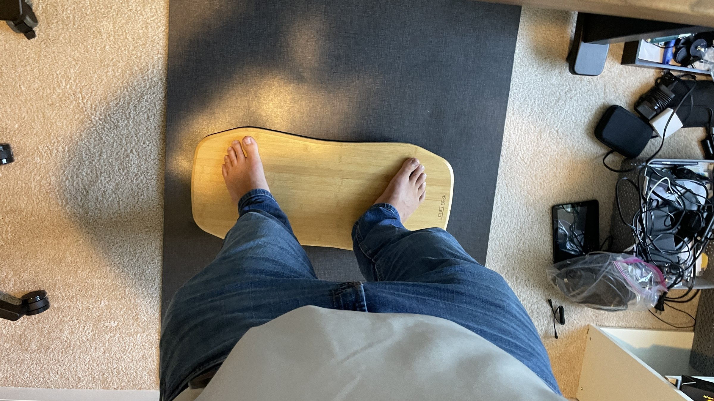
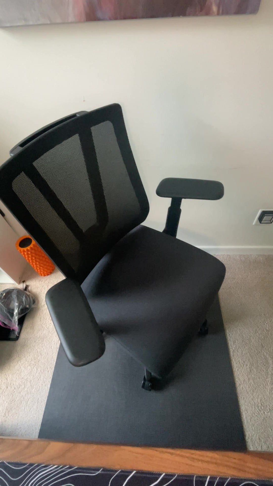
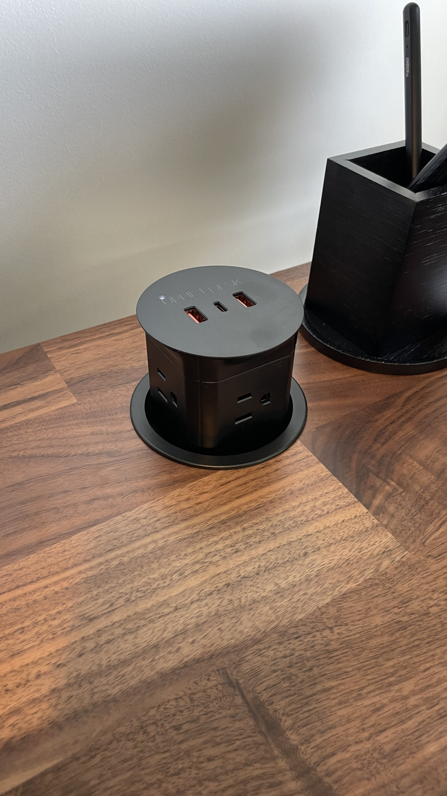
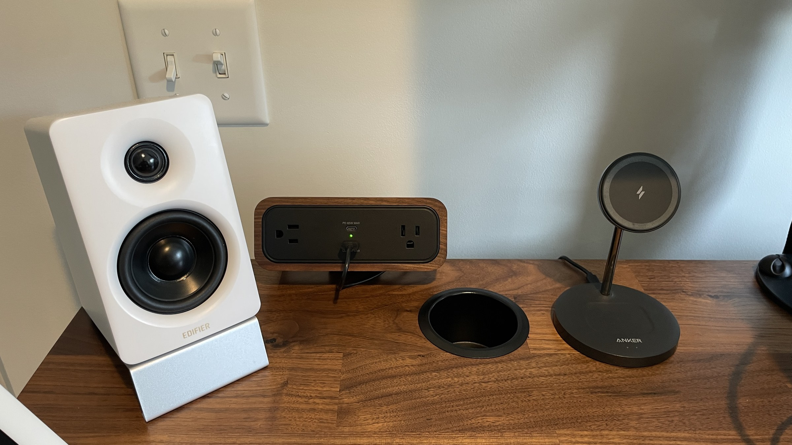
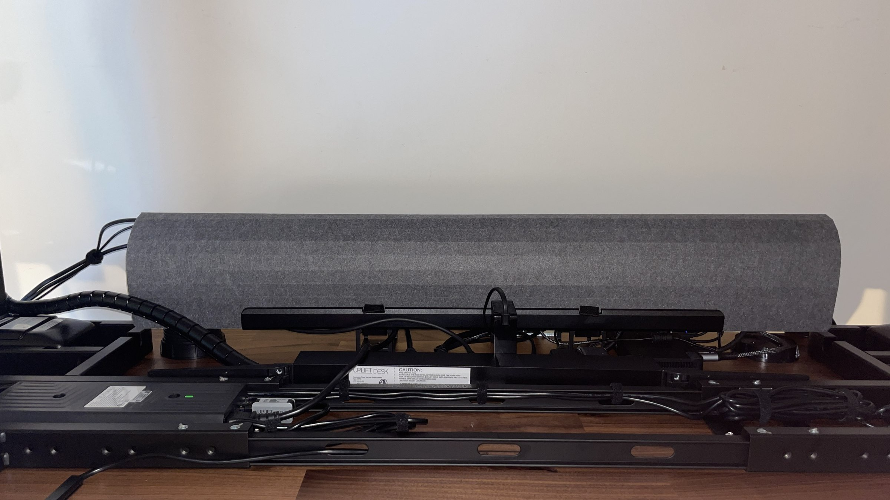
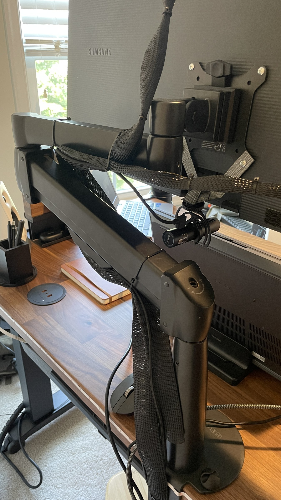
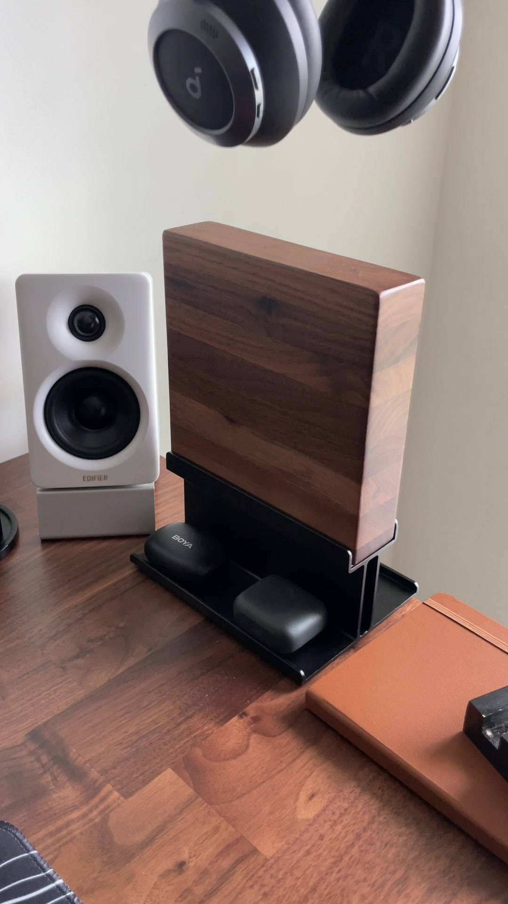

I've been sitting at this desk for the better part of a month now, and I still catch myself looking at it and thinking, "I really like this thing."
Which is a little ridiculous.
It's a desk.
But I spend nine or ten hours a day sitting or standing at this desk, so maybe being excited about it isn't quite as silly as it sounds.
This is the latest, and probably the biggest, installment in my WFH Desk Upgrade series. We've already upgraded the speakers with the Edifier M60s, the keyboard with Keychron, and there are still some changes coming to the rest of the workstation. But the desk was always going to be the foundation of the whole thing.
For roughly four years, my "office" consisted of a 48" x 24" compressed wood desk.
It worked.
That's about where the compliments end.
It was small. It wobbled. It wasn't particularly pretty. And as I started adding better equipment to my setup, I found myself constantly rearranging things to make everything fit.

So when UPLIFT Desk offered to send me a V3 4 Leg Standing Desk, I was pretty interested.
Not because I needed a desk capable of lifting 535 pounds.
I wanted four legs because I wanted the desk to be stable.
After a month of using it, I can say that was the right decision.

I Didn't Want a Standing Desk. I Wanted a Stable Desk.
That's an important distinction.
I've never been particularly interested in the idea that I should stand all day because somebody on the internet told me sitting is bad.
I don't want to stand for nine hours.
I don't want to sit for nine hours either.
What I wanted was the ability to change positions throughout the day without having to stop working.
That's what I've ended up doing.
I'll stand for roughly an hour, sit for roughly an hour, and repeat that throughout the workday. There isn't some elaborate schedule involved. I just change positions when it feels like it's time. And after about a month, it has become completely normal.
The UPLIFT V3 4 Leg has a height range of 22.6" to 48.7", and the four leg frame uses one motor per leg, with the motors synchronized through the desk's controller. UPLIFT Desk rates it for a 535 pound lifting capacity.
Again, those numbers are impressive.
But the number I cared about was much simpler: how much does this thing move when it's all the way up? Because that's where a standing desk earns its keep.
Let's Talk About Stability
This was my big test.
I wasn't particularly worried about the desk sitting down at normal chair height. If a desk is wobbling badly at its lowest setting, you've got a much bigger problem. I wanted to know what happened when I raised it.
The answer is basically nothing.
I pushed it from front to back. Nothing. I pushed it from side to side. Very little.
The front to back stability is honestly the part that surprised me most. There is essentially no noticeable movement. I can make it move if I deliberately try hard enough, but at that point I'm not really using the desk normally. I'm trying to see how much force I can put into it before I start moving the entire desk.
And that's a pretty good result.
UPLIFT Desk uses TremorGuard steel feet and I Beam crossbars as part of the V3 4 Leg frame, and the company says the frame has been third party tested against ANSI/BIFMA X5.5 2021 requirements for stability, strength, safety and durability.
My experience lines up with the point they're trying to make. It's stable. Really stable. And that's exactly what I wanted from four legs.
I Was Worried About the Carpet
I'll admit it. I had concerns about putting this thing on carpet. You've got a 70 pound desktop, a heavy steel frame, a bunch of equipment sitting on top of it, and then you raise the whole thing to nearly four feet. Carpet isn't exactly the foundation that inspires confidence.
Turns out I was worrying about nothing. The desk is solid on my carpet. I don't get the feeling that the floor is contributing to some weird rocking or movement, and I certainly don't feel like the desk is less stable because it's not sitting directly on hardwood.
Four Motors, and You Can Hear Almost None of Them
The V3 4 Leg uses four synchronized motors, one in each leg. And it's quiet. Really quiet.
That's actually important in my house because my office is directly outside my youngest child's bedroom. I don't want to be moving the desk around during the day and have it sounding like I've started operating heavy machinery in the hallway. I can raise or lower the desk without giving much thought to the noise. That's exactly how I want a motorized desk to behave. It should do its job and get out of the way.
The Walnut Top Is the Star of the Show
The frame is impressive, but the walnut butcher block is what makes this particular desk look like something I'd actually want in my house.
It's gorgeous. Mine is 60" x 30", about 1.5" thick and weighs roughly 70 pounds.
The finish is probably my favorite part. It's not overly glossy. It's more of an even satin finish that lets the walnut look like walnut instead of making the desktop look like somebody poured a layer of plastic over it.
And it's thick. Coming from that old 24" wide compressed wood desk, this feels substantial. I don't sit here wondering whether the middle is eventually going to bow because I've got a monitor sitting on it.
UPLIFT Desk's V3 platform is also extremely customizable. The supplied media kit says the V3 4 Leg offers more than 200,000 possible configurations, with different desktop materials, sizes and finishes available.
That's one of the things I like about the platform. You're not just buying a desk. You're deciding what you want your desk to be. For me, walnut and black was the obvious choice. And I think it looks fantastic.
60" x 30" Is Plenty of Room for Me
My current monitor setup isn't particularly small. I've got a 34" Samsung S34J55x ultrawide mounted on the Range X monitor arm, plus a 16" portable monitor underneath it. I've also got my Edifier M60 speakers sitting toward the corners. And I still have plenty of room.
That's a big change from the old desk. That thing was 48" x 24", and I made it work for four years. I don't have any complaints about the 60" x 30" surface. It gives me enough room to spread things out without making the desk feel enormous.
Could I eventually use more space? Sure. I'm planning to continue upgrading this setup, and I'd like to experiment with a dual 4K or possibly dual 5K monitor setup. If I go down that road, I may eventually wish I had more desktop. But right now, I don't need it.
The Real Benefit of the Sit Stand Setup
This is where the desk has actually changed my workday. Not dramatically. Not in some "this desk changed my life" sort of way. It's just easier to move around.
I'll be sitting in a Teams meeting, decide I've been sitting long enough, and raise the desk. Or I'll be standing for a while and decide I want to sit down. There's no production involved. I don't have to move everything. I don't have to unplug anything. I don't have to think about whether the monitor is going to be at the right height. I hit the keypad and keep working.

That's what I wanted. The supplied UPLIFT Desk material puts a lot of emphasis on ergonomic positioning, including the 22.6" to 48.7" height range and programmable memory presets. For me, the more meaningful part is that I'm actually using the range. I've had the desk long enough that standing isn't a novelty anymore. It's just what I do.
The Motion X Board Is Probably the Accessory I Use Most
I didn't expect this. The Motion X Board isn't part of the desk. It's a balance board that sits underneath you while you're standing. I use it two or three times a day, almost every time I'm in a meeting.

I'm a fidgeter. If I'm standing still for a long time, I'm going to start shifting my feet around anyway. The Motion X Board gives me something to do. I can rock it. I can lean. I can change where my feet are sitting. I can generally move around while I'm standing instead of locking myself into one position. And that makes standing for longer periods much more comfortable for me.
It doesn't make the desk more or less stable because, well, it's under my feet. But it has become a surprisingly important part of the setup. If UPLIFT Desk ever makes a Pro version, I'd love to see a slightly larger ball underneath it. Give me a little more range. Let me lean into the thing. I'll probably spend entire meetings rocking around on it, but I'd be comfortable doing it.
The Clarksville Chair
The Clarksville Chair has also been a really good addition. I like a chair with some room to move around, and the Clarksville has plenty of width. The lumbar support is also strong. I mean strong. There's actually something there to support you instead of a tiny bump that technically qualifies as lumbar support.

When I'm ready to stand, I roll the chair over to the left side of the desk and get on with my day.
I did have one gripe during assembly. The connection between the seat base and the angled bracket supporting the back didn't feel like it tightened down quite as much as I wanted. My suspicion is that the bolts may be a millimeter or two too long to really clamp that connection as tightly as it could. It's not a deal breaker. It's just something I noticed, and something I'd like to see improved. Otherwise, I've been very happy with the chair.
Power. Everywhere.
I have an almost stupid amount of power on this desk. UPLIFT Desk sent the Pop Up Power + Storage and the DuoMount Power, along with an eight outlet mountable surge protector.

The Pop Up Power is convenient because it's right there when I need it. The DuoMount is also convenient. Maybe a little too convenient. The DuoMount gives me 18W USB A and 65W USB C power. The USB C port is actually enough to charge the Chromebook I'm typing this review on. That's useful.

But I don't think I need both it and the Pop Up Power. If I were configuring the desk myself, I'd probably pick one. Since I have both, I'm thinking about moving the DuoMount underneath the back edge of the desk. That would give me hidden power over the rear edge without taking up additional space on the desktop. And that's a configuration I like a lot more.
This is one of those cases where I don't think the answer is that UPLIFT Desk sent me too much stuff. I think the answer is that the desk gives me enough flexibility to put that stuff where it actually makes sense for me.
Cable Management Doesn't Feel Like an Afterthought
This is one of those things you don't appreciate until you've had a desk with terrible cable management. Then you appreciate it very quickly.
There are cables everywhere in a modern workstation. The V3's FlexMount Cable Manager gives me a dedicated place to start dealing with them, and the frame has plenty of mounting points for attaching accessories and equipment.

UPLIFT Desk specifically designed the V3 around an accessory mounting system that allows things such as monitor arms, surge protectors and other accessories to attach to the frame without drilling into the desktop. One of the things I particularly like is being able to mount a Thunderbolt docking station underneath the desk. That keeps something I need all the time out of my way.
Between the FlexMount system and the additional cable management kit UPLIFT Desk sent, I haven't had trouble finding a place for everything. And that's the goal. I don't need a desk that looks perfect in a product photograph. I need a desk where I can figure out where everything is supposed to go when I actually plug all of my equipment in.
The Range X Monitor Arm Is a Tank
The Range X Single Monitor Arm is solid. I'm running my 34" ultrawide on it, and it doesn't wander around every time I touch the keyboard. If I deliberately force it, I can get some movement. I actually think I could reduce even that if I tightened the screws a little more, especially since I don't move the monitor very often. Once I get it where I want it, it stays there. That's all I really want from a monitor arm.

The App Is Cool. I Just Don't Use It Much.
The V3 can be controlled through the UPLIFT Desk app, and there are some genuinely useful features in there. You can set reminders. You can set goals for how long you want to stand. The app can also estimate calories burned while standing. I like having those options. I just don't use them very often.
The keypad is right in front of me. If I want to change the height, I press a button. I don't have to unlock my phone, find the app and then tell the desk what to do. The app isn't bad. The keypad is just easier.
The Little Accessories Are Actually Pretty Good
Some of the accessories are small enough that you could dismiss them as fluff. I don't think that's entirely fair.
The walnut headphone stand is a good example. I have a favorite pair of headphones, and instead of throwing them on the desk, I can hang them where they're easy to grab. And because it's walnut, it matches the desktop. It's a small thing, but it looks good.

The clip on cup holder is another one I've ended up liking more than I expected. I almost always have two drinks sitting around while I'm working. Coffee and water. Having somewhere to put one of them that doesn't take up valuable desk space is surprisingly convenient. The bamboo coasters and organizer are similar.
None of these things are going to convince somebody to buy a $1,000 plus desk. But once they're there, you notice when they're useful.
The Casters Are a Bit of a "We'll See"
UPLIFT Desk sent the soft roll casters with the desk, and I appreciate having them. I'm just not getting much use out of them right now. My office is carpeted, and I don't move the desk very often. So in my current environment, they're kind of a moot point.
But there's a decent chance that won't always be the case. My wife likes moving entire rooms around. The little nook I currently call my office could look completely different six months from now, and I could find myself working in another room with wood floors. If that happens, I have a feeling I'll be very thankful that I already have the comfort casters.
Five Boxes of Stuff
Let's talk about the packaging. My UPLIFT Desk order showed up in five boxes. Five. And everything was wrapped extremely well. There was enough packaging that I was genuinely looking at the pile thinking, "How is my recycling bin going to hold all this?"
But honestly? I'll take it. This is a large, heavy desk with a finished 70 pound desktop. There are plenty of opportunities for something to get damaged during shipping. I'd much rather spend an afternoon breaking down cardboard than open the box and discover that the beautiful walnut top I was excited about had been beaten up somewhere along the way. Everything arrived in good shape. That's what matters.
What I Would Change
I've been pretty complimentary of the desk, so here's where I'm going to be picky.
- The Pop Up Power and DuoMount Power overlap more than I need. I'd probably choose one and use the other mounting option for something else
- I'd move the DuoMount underneath the rear of the desk if I were keeping both
- The app is useful, but I still use the keypad more
- The casters aren't doing much for me on carpet
- The Clarksville Chair could have a better connection between the seat and back bracket
- I want a bigger ball underneath the Motion X Board
That's about it. After a month of using the desk every workday, that's a surprisingly short list.
The Four Leg Decision Was Worth It
This is probably the biggest takeaway for me. I didn't need four legs because I was planning to put half a ton of equipment on my desk. I wanted four legs because I hate a wobbly desk.
The V3 4 Leg has basically eliminated that concern. Even at maximum height, I don't find myself thinking about the desk moving. That's a huge deal when I've got a 34" ultrawide sitting on a monitor arm.
The four motor design, the heavy frame, the TremorGuard feet and I Beam crossbars all contribute to the stability UPLIFT Desk is trying to achieve with this platform. But the part I care about is what happens when I'm sitting here working. The desk doesn't annoy me. I don't notice it wobbling. I don't think about whether the monitor is shaking. I don't worry about whether the carpet is causing problems. It's just there. And that's exactly what I wanted.
What About the Long Term?
I'm not going to pretend that a month tells me whether this desk will still be perfect ten years from now. It doesn't.
What I can tell you is that the construction gives me confidence. The four motors are working together every time I raise or lower it, and the frame feels substantial.
UPLIFT Desk says the motors are tested for 20,000 cycles, which the company equates to adjusting the desk four times a day for 15 years. The V3 also carries a 15 year warranty. That warranty matters. Four electric motors and all the electronics that go along with them are still mechanical and electrical components. Stuff can fail. That's life. But if I'm going to invest in a workstation that I'm using nine or ten hours a day, I like knowing UPLIFT Desk is standing behind the thing for 15 years.
So, Do I Actually Recommend It?
Yeah. I do. But not because it's a standing desk. There are plenty of standing desks.
I recommend this particular configuration because it gives me what I actually wanted out of a workstation. It's stable. It's quiet. The desktop is beautiful. There's enough room for my current setup without feeling excessive. The height adjustment has become a normal part of my workday instead of a gimmick. The cable management gives me somewhere to put all the stuff that comes with a modern workstation. The power options are almost excessive. The monitor arm is solid. The Clarksville Chair is comfortable. The Motion X Board has somehow become something I use almost every time I'm in a meeting. And the whole thing looks great sitting in my office.
Most importantly, after about a month, I'm still excited to work at it. That's the part I keep coming back to.
I've spent four years making a 48" x 24" desk work. It did its job. This one makes me want to sit down and get to work. Or stand up and get to work. Whatever. That's the point.
The UPLIFT V3 4 Leg has become the foundation of my WFH setup, and I can't really imagine going back to the old desk now. I've got more room, better ergonomics, dramatically better stability, and a workstation that feels like it was actually built around how I work.
I don't need a desk to change my life. I just need it to disappear into the background and let me do my job. After a month, that's exactly what this one is doing. And yeah, I'm still pretty excited about it.
The UPLIFT V3 4 Leg earns the four legs I wanted it for. It's genuinely stable at full height, the walnut top is the best-looking desktop I've owned, and the cable management and power options finally give a modern WFH setup somewhere sensible to live. A month in, it's still the desk I want to sit down at.